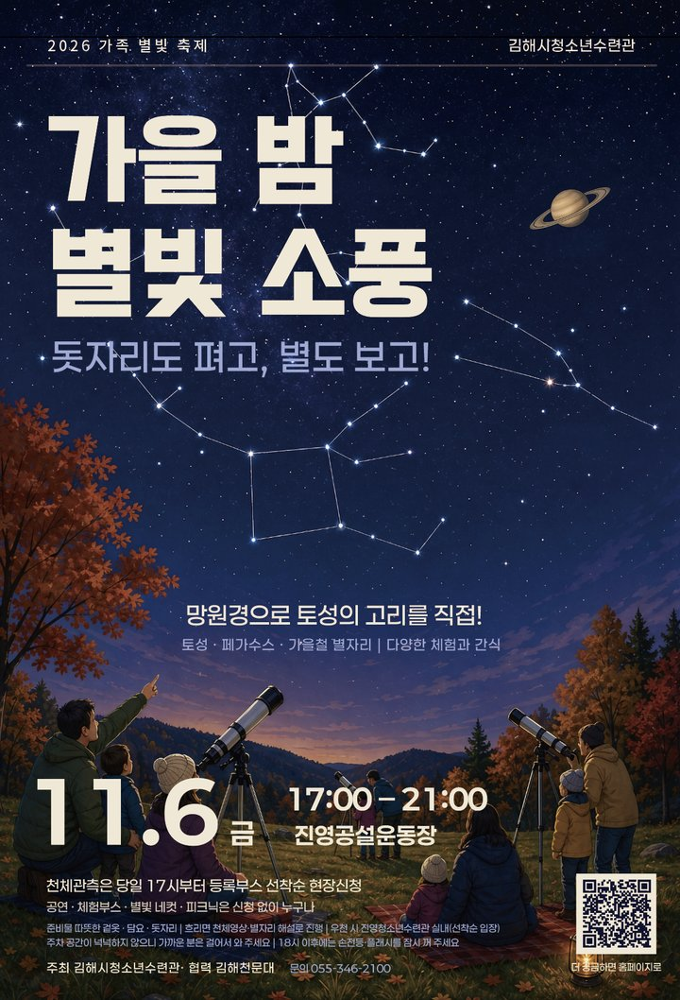

가을 밤
별빛 소풍
돗자리도 펴고, 별도 보고!
금요일 저녁, 걸어서 오는 가족 소풍. 운동장의 불을 끄면 하늘이 열리고, 망원경으로 토성의 고리를 직접 봅니다. 다양한 체험도 함께해요.

행사소개
불을 끄면, 가족이 보인다
- 행사명
- 2026 가족 별빛 축제 「가을 밤 별빛 소풍」
- 주제
- 망원경으로 만나는 토성·페가수스와 가을철 별자리
- 일시
- 2026. 11. 6.(금) 17:00 ~ 21:00
- 장소
- 진영공설운동장
우천·혹한 시 김해시청소년수련관 실내 전환 - 대상
- 청소년 포함 가족, 지역 주민 누구나
- 주최
- 김해시청소년수련관
- 협력
- 김해천문대
가족이 한 공간에 있어도 각자 다른 화면을 봅니다. 망원경은 한 번에 한 사람만 볼 수 있어, 나머지 가족은 기다리며 그 사람의 반응을 봅니다.
진영은 밤에도 밝은 신도시입니다. 공설운동장은 걸어서 갈 수 있는 거리에서 조명을 끌 수 있는 거의 유일한 넓은 땅입니다. 이날 하루, 천문대를 동네로 데려옵니다.
행사일정
해가 지는 순간부터 별이 뜨는 순간까지
- 개장 · 천체관측 현장신청 시작등록부스에서 선착순으로 관측 회차 배정. 체험부스 동시 개장
- 1부 공연 · 어쿠스틱석양 무렵의 첫 무대, 스탬프 미션 시작
- 해넘이피크닉존에서 해 지는 하늘을 함께 봅니다
- 개회식15분
- 소등 세리머니10초 카운트다운 → 조명탑 순차 소등 → 90초 눈 적응 → 육안 별자리 해설
- 천체관측 1~5회차20분 간격 · 19:50 종료 / 무대 포토존 개방
- 2부 공연 · 어쿠스틱관측을 기다리는 가족을 위한 낮은 음량의 무대
- 자유 시간육안 별 보기 · 별자리 퀴즈 · 별빛 네컷 · 별똥별 뽑기 (리워드 교환 20:40 마감)
- 피날레 · 다 함께 부르는 노래직접 만든 별자리 랜턴을 동시에 끕니다
- 조명 재점등 · 귀가종료와 동시에 운동장 조명을 다시 켭니다
행사 일정은 현장 상황과 기상에 따라 일부 바뀔 수 있습니다.
현장 배치
- A관측존 — 메인 망원경 회차 관측, 서브 망원경 자유관측. 붉은 빛만 사용합니다
- B가족 피크닉존 — 돗자리를 펴고 쉬는 곳. 무대 정면
- C무대·포토존 — 공연이 없을 때 가족 포토존으로 개방
- D체험부스존 — 진입로부터 트랙 바깥으로 이어지는 체험부스
- E별빛 다방 — 따뜻한 음료, 추울 때 쉬어 가는 곳
- ★본부·등록부스 — 천체관측 현장신청, 미아 보호, 응급 대응
개략도입니다. 실제 배치는 현장 여건에 따라 달라질 수 있습니다.
프로그램
천체관측만 현장신청, 나머지는 누구나 자유롭게
망원경 천체관측
18:10부터 19:50까지, 20분씩 5회차. 모든 회차가 같은 구성이라 어느 회차에 들어와도 같은 하늘을 봅니다. 회차마다 색이 다른 관측권을 드립니다.
- 토성고리가 정말 보입니다. 전 회차 공통
- 페가수스가을 하늘의 큰 사각형. 이걸 찾으면 다른 가을 별자리가 따라 보입니다
- 가을 별자리카시오페이아·안드로메다·페르세우스 — 그날 하늘에 맞춰 현장에서 고릅니다
참여 방법
- 17:00 개장과 함께 등록부스로
별도 사전신청은 없습니다. 당일 선착순으로 회차를 배정합니다. - 회차별 색깔 관측권 받기
1가족 1회차. 일찍 오면 원하는 회차를 고를 수 있어요. - 회차 시작 5분 전, 관측존 입구 집결
큰 화면으로 오늘 볼 별을 먼저 보고, 가족 단위로 망원경을 돌며 관측합니다.
관측존 옆 자유관측 망원경은 신청 없이 줄 서서 볼 수 있습니다(18:10~19:50). 회차가 마감되면 자유관측으로 안내해 드립니다. 늦게 온 가족을 위해 시작 시각까지 오지 않은 관측권은 현장 대기 가족에게 순서대로 넘겨 드립니다.
체험부스
신청 없이 자유롭게 참여하세요. 운영 17:00~21:00
별자리 랜턴 만들기
원통에 가을 별자리 구멍을 뚫고 불을 켜면 벽에 별자리가 비칩니다. 피날레 소등 때 함께 써요.
가족 별자리 등록소
가족 수만큼 별을 찍어 ‘우리 가족 별자리’ 카드를 만듭니다. 카드 뒷면이 스탬프 판.
리워드 ①태양계 몸무게 챌린지
목성에서 우리 가족 몸무게 합은? 먼저 맞혀 보고 저울로 확인해요.
리워드 ②야광 페이스페인팅
어두워질수록 빛나는 별·달·행성 무늬.
빛 실험실
프리즘으로 빛 나누기, 손전등 그림자극. 수련관 과학동아리 청소년이 운영합니다.
별빛 소원 우체통
가족 엽서를 쓰면 1년 뒤 2027년 11월에 배달됩니다.
별빛 다방
코코아·유자차 등 따뜻한 음료. 추울 때 쉬어 가는 곳.
별빛 네컷
행사 전용 프레임으로 찍는 가족 네컷 사진. 운영 시간 내 무제한.
별똥별 뽑기
미션으로 받은 코인으로 하는 인형뽑기. 리워드 교환처.
리워드 미션
① 별자리 스탬프 미션
가족 별자리 카드 받기 → 체험부스 4곳 이상 스탬프 → 만족도 조사 작성 → 별똥별 코인 2개 (가족당 1회)
② 태양계 몸무게 챌린지
목성에서의 가족 몸무게 합 예측 → 저울로 확인 → 오차 10% 이내면 코인 1개. 참여 가족 모두 야광 별 스티커
코인은 별똥별 뽑기(9번 부스)에서 사용합니다. 경품이 모두 나가면 교환을 마감하고 스티커로 대신합니다. 리워드 교환 마감 20:40.
공연 · 피크닉
- 1부 17:05~17:45 석양의 어쿠스틱 무대
- 2부 19:30~20:10 관측을 방해하지 않는 낮은 음량의 어쿠스틱
- 피날레 20:45~21:00 다 함께 부르는 노래와 랜턴 동시 소등
- 가족 피크닉존 무대 앞 잔디. 레크리에이션 17:20·18:20, 어두워진 뒤엔 가족 별자리 퀴즈
- 방한 핫팩 배부, 무릎담요 대여(수량 한정)
이용안내
밤, 야외, 11월이라 미리 챙겨 주세요
정상 운영. 관측 5회차 모두 진행합니다.
밝은 천체(토성·1등성)로 바꿔 관측하고, 어려운 회차는 큰 화면 천체영상과 별자리 해설로 진행합니다.
김해시청소년수련관 실내로 옮기거나 일정을 미룹니다. 실내는 공간이 좁아 선착순으로 입장합니다.
관측 5회차는 그대로 진행하고 피날레를 당겨 20:10에 마칩니다.
기상 판단은 11. 4.(수) 18:00 1차, 행사 당일 12:00 최종으로 하며 결과를 따로 공지합니다.
준비물
관측 예절
- 18시 이후에는 손전등과 휴대폰 플래시를 잠시 꺼 주세요. 눈이 어둠에 적응해야 별이 잘 보입니다.
- 관측존에서는 붉은 빛만 사용합니다. 길 안내 조명은 그대로 켜 둡니다.
안전
- 아이들에게 야광 손목밴드를 채워 드립니다. 보호자 연락처를 적어 주세요.
- 아이를 잃어버렸다면 본부·등록부스 또는 별빛 다방으로 오세요.
- 행사 현장은 영상으로 기록됩니다.
문의게시판
자주 묻는 질문을 먼저 확인하고, 더 궁금한 점은 남겨 주세요
자주 묻는 질문
천체관측은 미리 신청해야 하나요?
사전신청은 없습니다. 행사 당일 17:00 개장과 함께 등록부스에서 선착순으로 회차를 배정하고 색깔 관측권을 드립니다. 1가족 1회차만 신청할 수 있어요.
관측권을 못 받으면 망원경을 볼 수 없나요?
관측존 옆 자유관측 망원경은 신청 없이 줄 서서 볼 수 있습니다(18:10~19:50). 회차 시작 시각까지 오지 않은 관측권은 현장에서 기다리는 가족에게 순서대로 넘겨 드립니다.
체험부스도 신청해야 하나요?
아니요. 체험부스, 공연, 피크닉존, 별빛 네컷은 신청 없이 자유롭게 이용합니다. 스탬프 미션을 완료하면 별똥별 뽑기 코인을 드려요.
비가 오거나 흐리면 어떻게 되나요?
흐리면 밝은 천체 위주로 관측하고, 어려운 회차는 큰 화면 천체영상과 별자리 해설로 진행합니다. 비나 강풍이면 김해시청소년수련관 실내로 옮기거나 일정을 미룹니다. 기상 판단은 11. 4.(수) 18:00 1차, 당일 12:00 최종으로 하며 결과를 공지합니다.
무엇을 챙겨 가면 좋을까요?
11월 저녁 야외라 꽤 춥습니다. 따뜻한 겉옷, 담요, 돗자리나 은박매트를 챙겨 주세요. 현장에서 핫팩을 나눠 드리고 무릎담요를 수량 한정으로 빌려 드립니다.
주차할 곳이 있나요?
운동장 주차장과 인근 주차 공간을 이용할 수 있지만 넉넉하지 않습니다. 가까운 분은 걸어서 와 주세요. 21:00 종료 후 10분간은 걷는 분이 먼저 나가고 차량은 순서대로 나갑니다.
아이를 잃어버리면 어디로 가야 하나요?
아이들에게 보호자 연락처를 적는 야광 손목밴드를 채워 드립니다. 아이를 찾을 때는 본부·등록부스나 별빛 다방으로 오세요. 현장 방송과 전 부스가 함께 찾습니다.
문의
주최 · 행사 전반 문의
055-346-2100
협력 · 천체관측 망원경과 관측 해설 지원